2016-10-03
libgd currently offers three different color quantization methods, so I'd liked to compare these. As source I used the well-known "lena" and "mandrill" images, which were quantized down to eight colors to stress the differences between the methods.
It's important to note that these tests are not concerned with transparency at all. Images with an alpha channel are likely to yield rather different results, particularly because GD_QUANT_JQUANT doesn't support true alpha transparency.
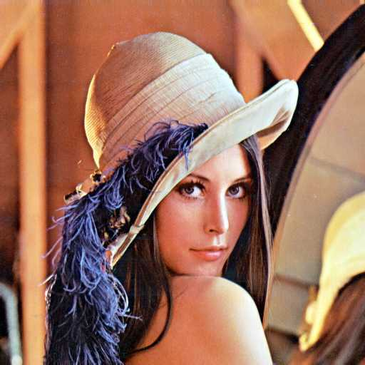 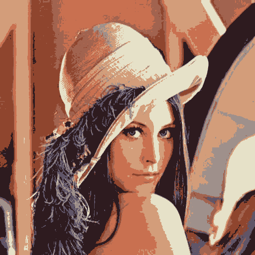 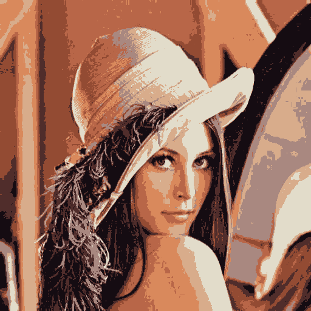
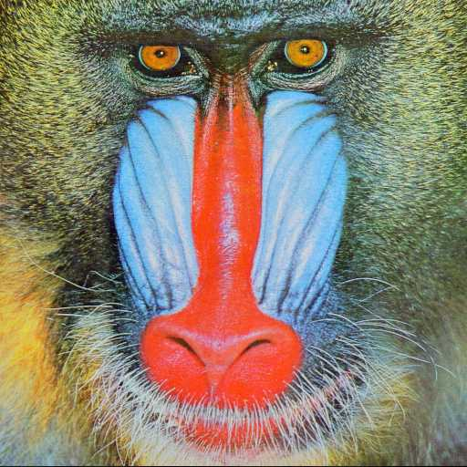 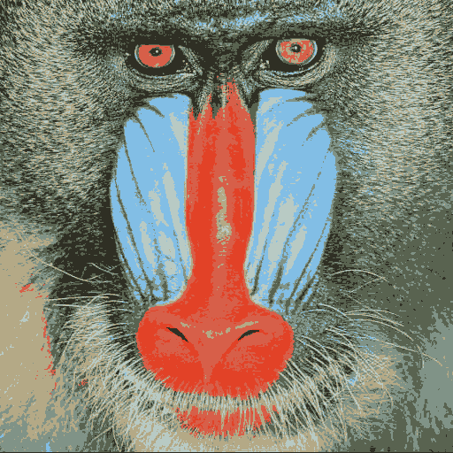 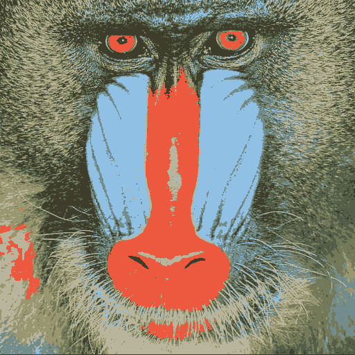 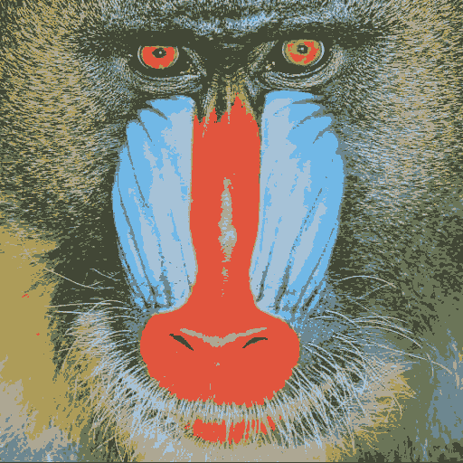
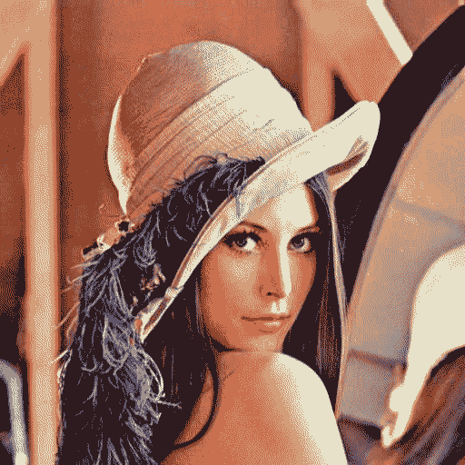 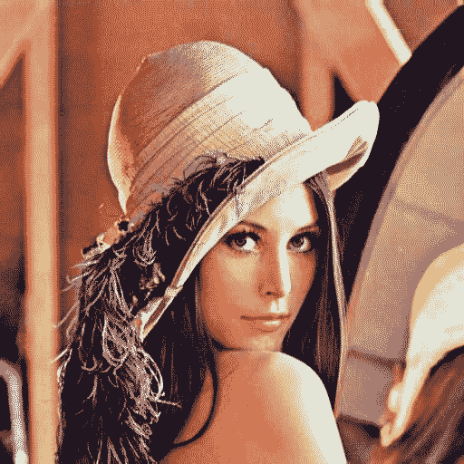
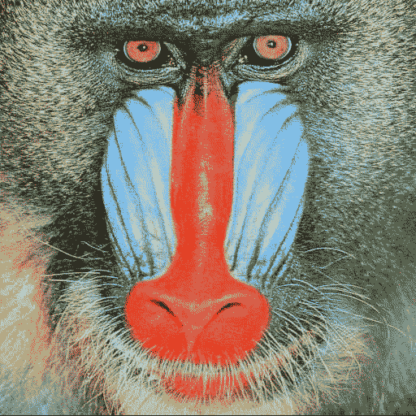 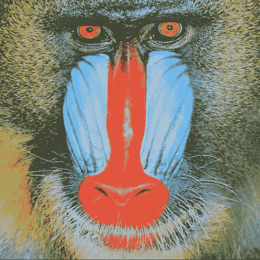
Obviously, all quantization methods try to find an optimal palette rather than using a "standard" palette, and all come to rather similar results. Well, GD_QUANT_JQUANT differs visually, and seems to prefer paler or more bluish colors. Regarding dithering, we notice that GD_QUANT_NEUQUANT obviously doesn't dither at all.
All in all, the results of the dithered GD_QUANT_LIQ appear to be most visually appealing. If no dithering is desired, GD_QUANT_NEUQUANT offers an interesting alternative.
The following program has been used to generate the resulting images.
#include <stdio.h>
#include <gd.h>
void test_to_palette(const char *name, int dither)
{
gdImagePtr im;
FILE *fp;
int i;
char path[256];
for (i = 1; i < 4; i++) {
sprintf(path, "%s.jpg", name);
fp = fopen(path, "rb");
im = gdImageCreateFromJpeg(fp);
fclose(fp);
if (!gdImageTrueColorToPaletteSetMethod(im, i, 0)) continue;
gdImageTrueColorToPalette(im, dither, 8);
sprintf(path, "%s-%d-%d.png", name, i, dither);
fp = fopen(path, "wb");
gdImagePng(im, fp);
fclose(fp);
gdImageDestroy(im);
}
}
int main()
{
test_to_palette("lena", 0);
test_to_palette("mandrill", 0);
test_to_palette("lena", 1);
test_to_palette("mandrill", 1);
return 0;
}